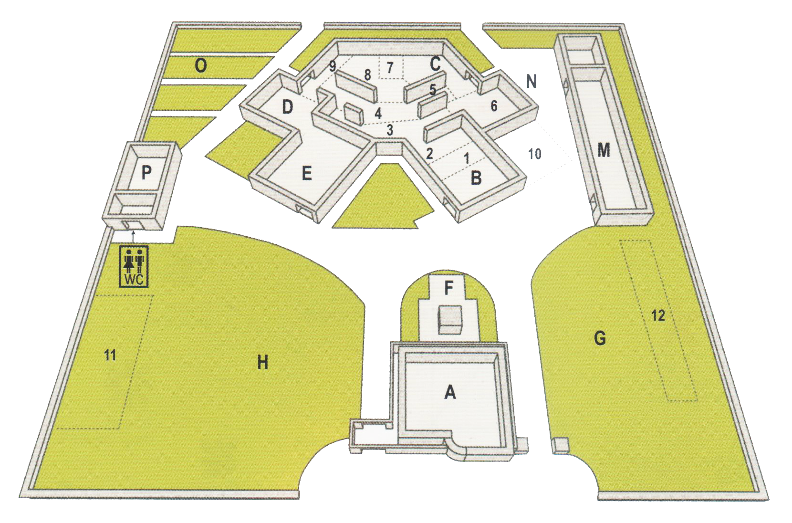

Interview with the Head of educational services at the MET and visit report
Unfortunately the MET is closed since September 2017 for building maintenance reasons. I couldn't interview the museum's users, but I did a long interview with the head of educational services at the MET, Mrs. Federica Foschi.
I also had the opportunity to visit the room that housed the museum to better understand how the museum was organized; you will find the report of the visit. The renovation of the museum is expected to start soon.
Note:
MP= Michela Parma
FF= Federica Foschi
Question no. 2
MP: What kind of educational activities does the museum offer?
FF: The educational activities we offer for schools are available at the following link http://www.museisantarcangelo.it/didattica/.
The activities, before the museum closed for renewal in September 2017, took place in room C, "conference room and educational workshops".
The activities that take place in class include two-hour wokshops related to the art, archeology, history and traditions of Romagna.
Question no. 4
MP: Do you offer collateral events? If yes, to whom are they addressed? How much is the participation? Which tool do you use for event communication?
FF: Events and projects related to the museum:
- PAM CLUB Little friends of the museums of Santarcangelo (2019: 20 years of Pam club): every year we propose a project with meetings, workshops, shows, readings for children aged 3 to 10 years and their families (in each appointment there are 20/30 people between adults and children);
- PUPPET FESTIVAL: in 2019 we arrived at the 29th edition; summer and winter show of puppet shows of street theater tradition (each show sees the participation of about 300 people);
- NIGHT AT THE MUSEUM: in a tent in the park of the museum and spend a night together (2019: 5th year);
- REMUSRETE project of the MUSEUMS OF TWO RIVERS (Marecchia and Uso): the remus network is a union of 4 municipalities - Santarcangelo, Poggio Torriana, Verucchio, Bellaria Igea Marina - which through a memorandum of understanding carries out projects of cultural sharing, enhancement cultural and territorial heritage.
- Finally, in collaboration with local associations we offer aperitifs, music, parties.
Communication tools: Facebook pages, newsletters, press releases, instagram, mail, printed material: posters, leaflets, etc.
Question no. 6
MP: Was there digital tools?
FF: There were, in some sections, monitors with videos linked to the section: eg videos on the blacksmith, videos on the mills of the Valmarecchia, etc.
Question no. 8
MP: What aspects of the museum should be improved and how could they be improved?
FF: The multimedia aspect of the museum must certainly be enhanced and developed. Surely with the start of the redevelopment works, a multimedia design will be evaluated.
Question no. 10
MP: Are there little-used or empty spaces where it would be possible to improve the visit to the museum with multimedia installations or immersive reality experiences?
FF: No, spaces are all used.
Visit Report
Having had the opportunity to visit the interior of the museum, despite its temporary closure to the public, I have noticed positive aspects of the museum that must be absolutely valued and other aspects of the setting that, in my opinion, can be modified to be exploited to the full.
Here's my thoughts on the current state of the MET. Coming from the train station of Santarcangelo di Romagna it is necessary to walk 10-12 minutes to reach the museum. The road conditions are not the best, but the museum is located in a fairly good place compared to the city, in fact it is slightly outside the historic center but it takes only 10 minutes walk to reach it. What I have noticed, reaching the museum by car, is that there are not many parking lots for cars and there are no parking lots for bicycles.
The outside of the museum
From outside the museum fence you can see part of the huge park that houses the museum. In some areas of the garden are located ancient millstones. Here, numerous trees of different families characterize the park and create large areas of shade that can be used in summer, for example. There are also numerous fruit trees: cherry trees, olive trees, hazelnuts, etc... enrich the landscape.
The entrance to the museum that overlooks the street looks like a white building with a large inscription on the facade that bears the name and logo of the museum, easily visible to those who pass from there in front. This part of the building is intended for the Museum's offices.
At the gate on the left hand side of the fattening area there are large posters showing the summer activities proposed by the museum to the citizens, in particular to children and families. One advertised the "Puppet Festival" and the other the "Theatre under the stars".
As Federica Foschi, head of MET educational services, explained to me, in the last two to three years, since MET temporarily closed down for the renovation of its premises, they have been promoting activities and events within the large park surrounding the museum, so that the community does not lose the relationship it had built up over the years with the Museum.
Map of the museum

Map of the museum found in Turci M., Foschi F., MET - Museo degli Usi e Costumi della Gente di Romagna, Verucchio: Pazzini Stampatore Editore, 2007.
- ...e ti dirò chi sei
- Sulla terra
- La via del grano
- Con acqua e pietra
- La paglia
- Fra trama e ordito
- Il tegliaro
- A ferro e fuoco
- La via del vino
- Trasporti ruarali
- Grandi macchine
- Terra e pietra
A. Office
B. Reception and ticket office
C. Etnografie
D. Conference room and educational workshops
E. Sala dialoghi
F. Teatrino del riposo
G. Lawn of the millstones
H. Lawn of the threshers
M. Specialised library and archives
N. L'albero di Pollicino
O. Cultivation laboratory
P. Restoration laboratory
This map dates back to 2005 and, as I will explain later, there are some differences in the map compared to the current layout of the museum rooms.
The inside areas of the museum
Continuing beyond the entrance gate you will find yourself in front of a huge building that once housed the municipal slaughterhouse. The external structure is the same as at the time, while inside the rooms have been reorganized to house the collections of the Museum.
My visit begins at the end of the museum itinerary, in the enormous room where the Museum's archive is located. Compared to the map, which dates back to 2005, the archive is no longer in room M, but in room E. Here the documents are not kept in the best conditions and there is no archivist who takes care of the funds. It is a room 6/7 meters high, well lit by long windows on the sides; inside there are shelves, cabinets and drawers that house documents, magazines and prints. Unfortunately, this room also serves as a warehouse: chairs, tables and various tools for the activities of the museum are piled up here. I think this should be relocated to the outside wing of the museum, as it was until a few years ago. In room M are now exposed the means of transport of rural life: wagons and gigs of any size and color. Finally, O and P no longer have the function shown on the map.
I continue my visit in room D, "conference room and educational workshops". Federica Foschi explains to me that here the activities with the pupils of the schools were carried out before the museum closed. Today the activities are carried out during the school year in schools by a company of Santarcangelo, "Le Pu-Pazze". Here is the programme for the school year 2019/2020. Currently this room is bare, it houses only some materials for external events organized by the museum.
From here begins a backward visit to the rooms of the museum that I was granted, where even today are preserved objects that are part of the permanent collection of the museum but that unfortunately are not visitable. Their state is obviously not the best, the objects are dusty and you can find small dead animals anywhere in the rooms.
The rooms are all very high and wide, not always divided by real walls, but by imaginary paths that conceptually separate the sections according to the topics. The fact of having so much space available is a great advantage because the tools of country life are large and take up a lot of space. There are, for example, the tools of the winemaker blacksmith, the baker, the seamstresses, the farmers, etc...
In each room there are large explanatory posters with long explanations, both in Italian and English, with images of the time. Visually they are well made in terms of color but I think that the explanations are sometimes too long.
One of the idea for the projection of the interactive media application concerns just this aspect: decrease, or even remove, the explanatory posters to create an application that can be downloaded on the mobile phone that guides the user through the rooms of the museum giving him, step by step, all the explanations he/she needs.
In addition, in each room, the museum itinerary presents particular installations that act as a counterpoint to the entire exhibition to draw the attention of visitors to the theme of memory as an accumulation and stratification of words, things, stories: these are Cumulus and Digressions.
The Cumulus are presented as monuments to the collective memory, as stops where to stop to collect the thoughts that the museum has aroused and add them to that "full of things" that is a representation of everyday life and its stories.
Digressions is a path that accompanies the visitor through the objects of life and work. The small display cases of Digression contain objects/symbols that aim to underline links and discontinuity between past and present. For example, in the wine room there was a display case with a bottle of Coca Cola inside, while in the sewing room there was a display case with a synthetic fabric.
Final considerations
What I have noticed is that there is no type of active participation of the users. It is a museum rich in history and art, but it includes a classic visit, in which the visitor moves through the rooms observing the collection without having the opportunity to touch and experience the ancient works of country life.
This is an aspect that I intend to modify in favour of an active and interactive visit of the users, maybe with the creation of small works of craftsmanship made by users who can take home at the end of the visit, exploiting the aspect of the museum-gift ....(SEARCHING HOW IT IS CALLED).
What I intend to develop is a project for the redevelopment of the museum itinerary through digital and non digital tools in which the visitor can feel integral and active part of this small cosmos that is the rural world of Romagna, rediscovering a past too often unknown, where you can find ideas, opportunities for reflection and ideas to be exploited, becoming part of the game creativity and imagination.